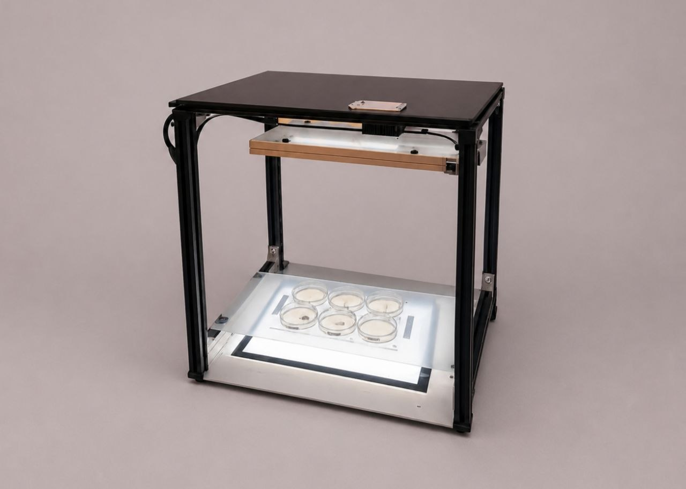
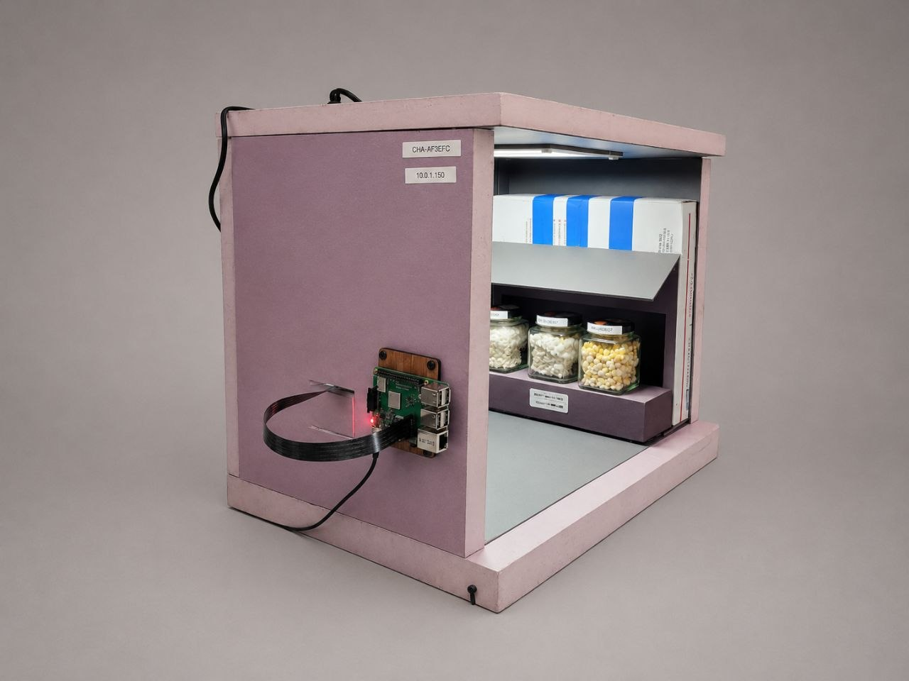
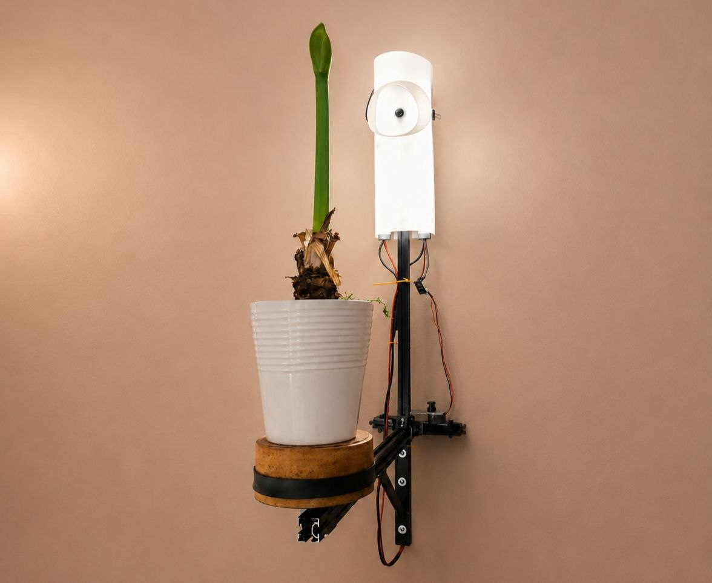
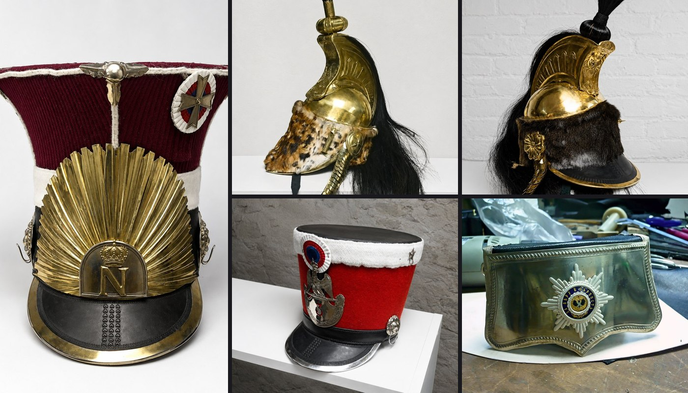
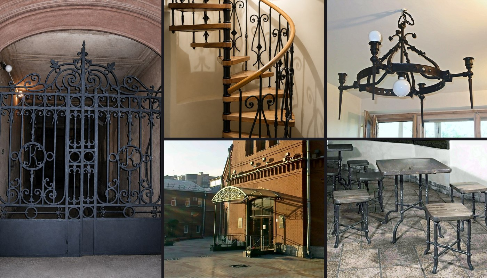
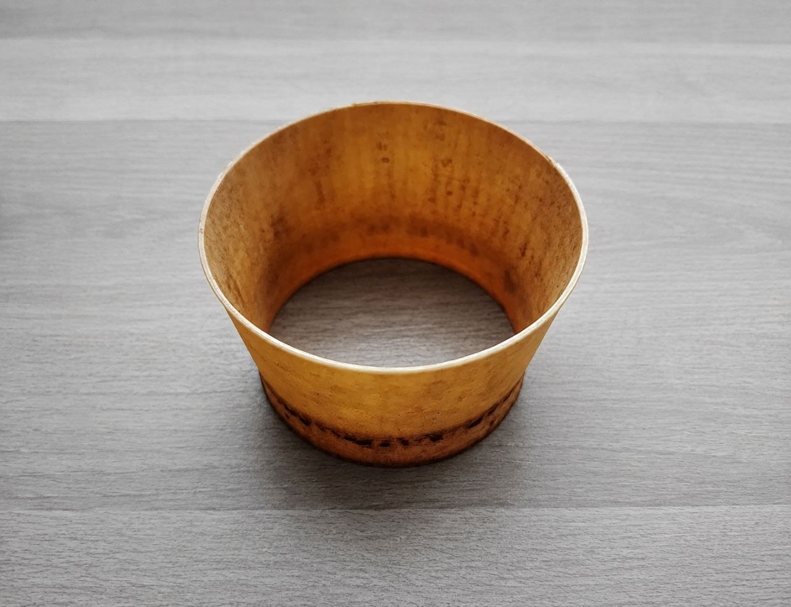
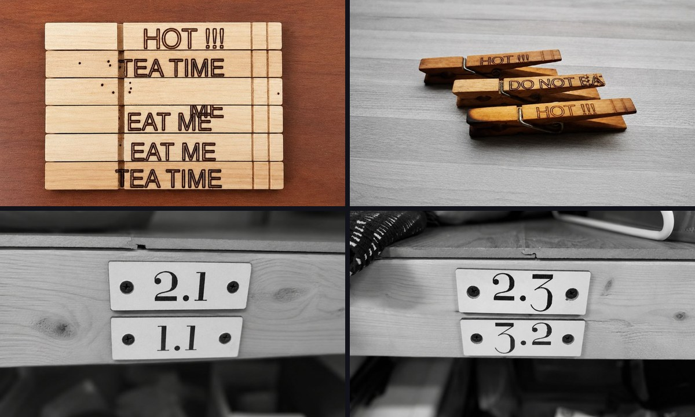
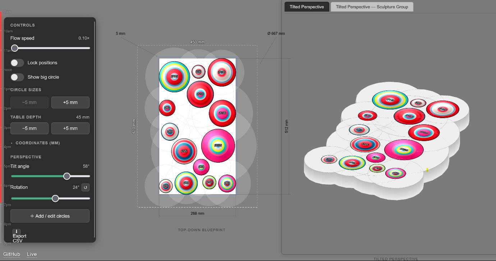
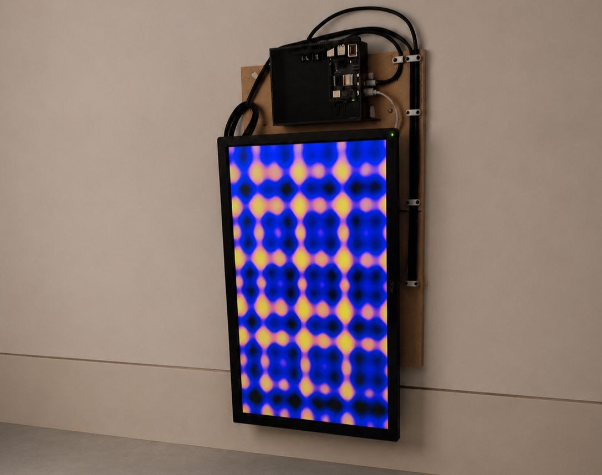

Multidisciplinary R&D Engineer combining hardware prototyping, manufacturing processes, experimental design, and software development.

Designed to automate long-term monitoring of fungal growth and evaluate whether simple, low-cost backlit imaging is sufficient to distinguish healthy mycelium from contamination without specialized optics.

Developed as a self-contained chamber for long-term observation of mycelium growing inside a closed environment, reducing the need for manual inspection.

Designed to create an affordable system for capturing long-term plant growth from multiple viewing angles, enabling reconstruction of animated 3D models of slow biological processes. Unlike conventional photogrammetry systems that rely on many synchronized cameras, this approach uses a single rotating camera to reduce cost while supporting experiments lasting days or weeks.
Process engineer on projects to design, modernize, and equip high-tech production facilities, including microelectronics. Reviewed customer drawings and manufacturing requirements, judged whether operations could be performed on proposed CNC machines, and identified the equipment, tooling, and fixtures the process needed — through purchase, installation, commissioning, and startup.
Process engineer over a shop of roughly 100 people overhauling multi-megawatt marine diesel engines and standby generator sets. Responsible for the technological processes and the routing behind them — strip-down, inspection and rebuild, machining and finishing, quality control, and integrating new equipment into the line.

Process engineer at a manufacturer of historically accurate reproductions of 18th–19th century military uniforms, edged weapons, and artifacts. Every product had two specifications that could conflict: what the historical object actually was, and what could be produced repeatably with available equipment and materials.

Blacksmith at a custom forge producing one-off architectural and functional metalwork: gates, canopies, furniture, and smaller commissioned pieces. Every job began as a conversation with a client and ended as a physical object with no second chance at the material.

Designed after finding commercial metal dosing funnels inconvenient for daily use.

A collection of small practical tools, labels, fixtures, and organizers created to solve everyday workflow problems around the house and workshop.

Developed for an interactive gallery installation where animated light patterns are displayed through hundreds of precisely positioned openings in a tabletop. The project required both a custom physical display system and software tools for rapid design iteration.

Unattended information display built from an older computer and an external monitor, with a GitHub Pages interface, automatic launch, refresh, and recovery after restart.